BarbecueNight.com Page 4
The Every Thursday Night Barbecue At Dick Flaharty's
The most recent Thursday, followed by the previous barbecues...
27 December 2007: No Photos, because the camera guy forgot, again. A guest speaker from Eugene Oregon gave a talk on early parachute rigging and military parachuting back when parachutes were patched often before being surplused to the civilians. Skydiving stories jumped in at terminal velocity and no few malfunctions. Coat Guard stories floated into the conversations, followed by kevlar canoes and folding kayaks. Airplane crash stories on glaciers were survived. Spruce Goose Pinot Noir led a flight of fine wines. Ice climbing stories reached all the way to the Fox ice towers. Plate techtonics mixed with plates of moose roast. Old maps cut from books induced some decided opinions as to book values of current old map values and future old book values. And that was just leaning against the sink counter. I do not know what those guys over by the coat rack were discussing. The people at the dining counter were repeatedly interrupted by invading wine glasses and selection comments. A committee was formed to search for next year's first week guest lecturer. Volunteers are welcome to speak and bring wine.
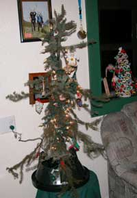
Fer good grief sakes, mercy. Without interruption, we more successfully identified verifiably functional and practical, detailed processes for resolving profound social contradictions, than have any of the media glorified, embarrassingly over-paid, obviously ineffective think tanks and social research institutes.
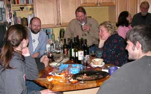
To learn the human-based knowledge most sought by the institutional leaders inside their credentially flattered institutional fortress walls, foolishly supported by common people, one must apply and analyze their conclusions among humans out in the real world where a small portion of those conclusions are useful and hold potential for human advancement by synthesizing them with actual human functioning that proves the failure of the greater portion of said conclusions. Advancement is effected by synthesizing certain small portions of current knowledge, not whole conclusions of inherently flawed institutions. Institutional leaders cannot understand or tolerate these words because they verifiably surrendered their ability to function as common people in the real world, in balance for their institutional positions and functioning, which is beyond their understanding because their titles and credentials fool their mind into perceiving that they are more than their mind inherently is. One cannot be or have all things, and must learn opposing knowledge to synthesize what one academically learns with the real-world functioning of the knowledge learned by other people. Interestingly, the ends of the social bell curve verifiably offer a more effectively analyzed synthesis of institutional concepts with human functioning, because institutionally espoused concepts are already at said ends or they would have already been manifested. The most common error of the institutional leaders is to attempt to test their concepts within the perceptual center of the social bell curve, which fails by inherent complexity of data the institutional leaders or technicians cannot understand as a result of their institutional specialization. Therein, Fairbanks Alaska, a technologically advanced society located at an environmental edge which induces real world functioning without escape, has attracted an optimum mix of said institutional sorts and real-world folks synthesizing their knowledge and discussing it at BarbecueNight.com. Therefore the most sought knowledge is most common among the people in Fairbanks Alaska and such places, while the social and other institutional leaders foolishly look for it inside their institutional fortress walls located within large cities, universities, governments, think tanks and such comfortable but functionally useless institutional cocoons.
One normally very good bottle of wine was undeniably corked, that is, the wine ruined by cork fungus. Wet cardboard in aroma and flavor. These things happen. Fortunately is was not the only bottle at the function.
The holiday season brought forward the first of entirely too much candy that was thoroughly enjoyed.
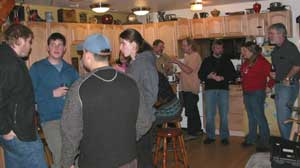 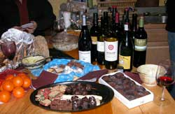
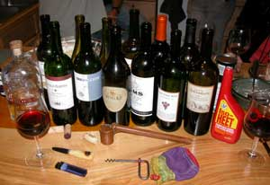
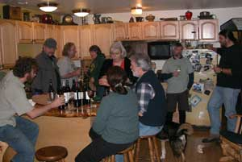
13 December: The What-Is-This thing was introduced between the Thor's Hammer vodka and a couple or so bottles of wine.No, we did not get to the Iso Heet alcohol, sort of.
Since the last dissertation on the What-Is-This thing, it has been analyzed at the prestigious University of Alaska, or some of the guys with jobs at the U, maybe working at the Pub. Now they are wondering what it is, but it was postulated that the hallow handle was filled with whale oil, or some such stuff. The handle was then tipped forward on occasion to slosh a bit more of the whale oil fuel into the fire cup, which, it turns out, is filled with a ball of hair as the matrix for the flammable oil for the fire.
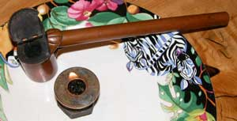
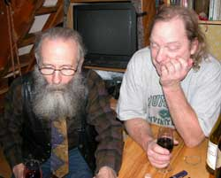
The BarbecueNight.com scientists therefore evaluated the postulation, by first acquiring some hair from the guy with the beard, wading it up in a makeshift arrangement of a pipe plug and a steel washer, sloshing in some Heet, and lighting it. That is them in the photo, watching the flame in the other photo.
It worked reasonably well with Iso Heet alcohol. So a whaling crew was sent after a whale, because nobody sells whale oil in town anymore.
We anticipate solving the What-Is-This puzzle ah, sometime. If you can figure it out, email us. There is a prize of, ah, an invitation to BarbecueNight.com. Or just show up anyway.
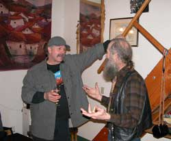
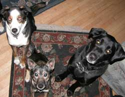
The diversity of the evening's lectures by three guest lecturers, and resulting conversation, was such that a web cam was suggested for BarbecueNight.com, so the guy who did not take notes will not be so denigrated by the web slave next time. This weekly event could be a rhetorical adventure of discovery, but nobody can remember the rhetoric.
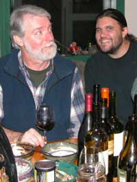
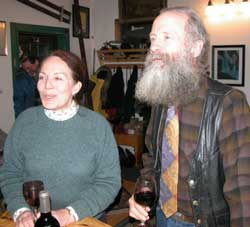
We had hoped that the resident journalists would have written notes, but they were broadcast journalists, not print journalists, without their audio equipment, and not fully versed in how to write words.
A recent acquisition of old Alaska gold mining books and maps was examined. No gold was found.
Your Alaska Carbon Credits opportunities were further advanced. Expect an announcement within a few weeks. The full program involves a significant effort to insure that those who can benefit the most are provided the highest quality Alaska Carbon Credits which will compound the environmental benefits. If you want to be among the first of a limited group to access this opportunity, email the web slave or check back in a few weeks for the Alaska Carbon Credits link at this website. You may not be able to find a more effective Carbon Credit program in a geographical region that most benefits your future opportunities.
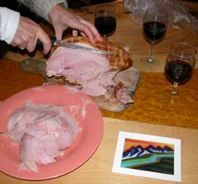
6 December: Suka, Bear, Brio and their friends ate well, with only one snarling match, and the humans did reasonably well. The coconut milk moose vegi dish was, ah, about the same as last time.
Several million dollar ideas were discussed and written on notes, somewhere. There was a flurry of domain name buying as a result. If you see a website on the internet, that makes you laugh and want to send money, it may be one of ours if we remember the idea and get around to it.
News journalists were discussed, among news journalists. Do not believe their excuses. Rag them mercilessly until they start asking the incessantly lying government bureaucrats more effective questions. But buy journalists good wine when you are there to help them drink it. They know how to prepare good food, so lace your comments with compliments.
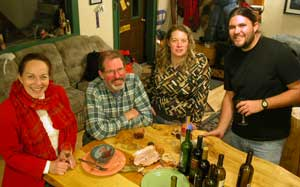
News journalists were discussed because the lawyers did not show up.
Secret remote Alaska places to land Super Cubs were quietly discussed so only the insiders could hear themselves.
The group discussing higher end business plans politely asked the group carrying on three conversations across the same table to drink more wine and talk less loudly, for some reason. We drank more wine, and then the conversation became louder. Some business plans have unexpected results.
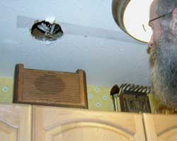
Half of one group discussed the antique radio, while the other half were trying to figure out why the hole above it has been there for the last few years.
The "What Is This Thing" thing, pictured on Page 1, was introduced, yet again, for no short interval of homdihooming. Some day we may discover that it was the tool they used at Chernobyl to look for flammable uranium/hydrogen gas leaks.
The guest lecturer of the evening discussed the relative merits of the new pile fibre compared to a down bed comforter.
And that is the full report, because those notes cannot be found. They are here somewhere on the desk. Maybe they will be found for the next report.
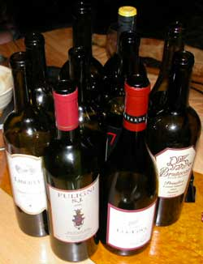
29 November: Culinary adventures of multiple ingredients were pontificated upon. Too many ingredients for the web slave to remember. Or perhaps it was too many wines.
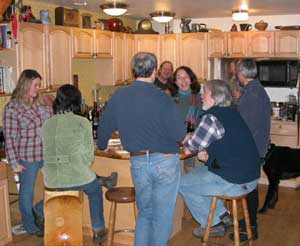
15 November: If you want to duplicate a conversation for a daytime TV sitcom, just get a high school computer teacher like the guy in the blue cap, sitting in front of the computer behind the wine glass and pottery thing, telling an older chap like the guy in the black vest, how the high school kids learn how to create a WikiSpace. The conversation of the dogs in the other corner was more reasoned, with fewer references to each other's absence of intellectual acumen surpassing the humans at times.
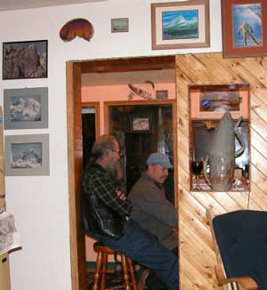
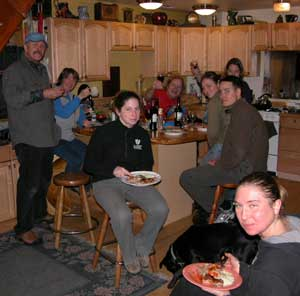
There being military officers present, there was a dissertation on modern mechanized infantry tactics compared to the same in the 1960's AD and 1960's BC. No change so far.
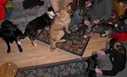
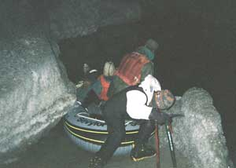
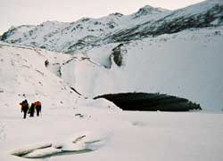
The report on the John Reeves Ice Towers has it that they may start, ah, soon, if all does not go awry. Check the AlaskanAlpineClub.org website.
8 November: Allright, allright, fer good grief sakes. Enough of the regulars suggested that I change my esthetically enriching single long paragraph into the usual boring old series of small paragraphs, just because they say it would read more comfortably. See what happens when everyone goes to school and believes those English teachers. They get lazy and want communication to be easy. Okay, in retaliation, I will start the new paragraphs at esthetically enriching places. Of course,
the guy with the camera forgets his camera, and half of the interesting half of the town shows up. I think we got the guy who was going to go to law school intellectually readjusted so he does not fall victim to that which would be the least intelligent decision of any human. Another more intellectually astute individual, the legal assistant, was fully appraised of the wisdom of expeditiously evolving beyond that experience, and agreed. One of the guys
in the Army was not there, but was admirably represented to the extent of quality he can only hope to approach. We articulated the most convenient process to wisely extricate him from his obvious error of joining the Army, at a time of his choosing. The committee assisting with that program included those who prior made the same error, and extricated themselves prior to the time the Army intended. What?, you want to know the process? Would you like a certain email sent, certain to be identified and intercepted by four federal agencies, illuminating you, for court verification, as the most patriotic anti-enemy person in the military, but so confusing and seemingly threatening to the easily confused mental midgets in the upper echelon military officer corpse and their staff promoted and selected because they never ask questions and thus stay stupid, that they will promptly grant your request for early resignation, and whatever else you ask, and give you an exemplary 201 file departure record?
Too easy. Do you agree that it is unwise to bomb the white house before next BarbecueNight? There are certain other questions of a certain nature and format. If you are not laughing at the war show, you have not seen the Roman Empire war records from which Cheney and Bush pulled the same lies their predecessors used to start the Korean, Vietnam and other wars. The oldest lies still fool gullible young testosterone saturated brains. That they are lies is proven by the observable fact that the verifiable cowards who start wars stay far behind the rear lines. It is even easier to get dummies into the military now. Slip high school or college males a few testosterone pills in their public school lunch program, and show them a camouflaged uniform. Cannon fodder is born every day. The dumbest fight for the ego gratification wars of George Bush, like every other such mental midget who started wars. Then there is the radio program guy.
If he and we get around to it, he will present his radio listeners with a short local public interest piece with the comments and sounds of a genuine and intriguing adventure in pitch black, leaving the adventurers and the radio listeners with the same visual opportunity in relation to the adventure, brilliantly illuminated with rhetorical illusions of awesome reality, where the sounds on radio are most of the experiences of the adventurers on the trip, except for the scant light of small headlights whose light is sucked into smooth dark surfaces. He is looking for a pair of crampons to borrow. Then there was the committee assigned to learn knowledge substantially new to them, and make a report.
They had eight convenient choices of topics among the group. They chose grid electricity production concepts in Alaska compared to those in the US. Wow. Consider common local power outages, and how grid systems allow electricity from another source to be instantaneously routed to the grid whose source or transmission point failed. Then consider the total mass of spinning turbine steel for electricity production on the lower 48 grid, or any significant portion of it, which is already running to produce instantaneous loads of electricity, from machines that otherwise require a long time to start and bring up to production speed, compared to the same ratio in Alaska with a fraction of the electricity demand and thus much less spinning steel mass backup for a failure, to therefore be entertained with the data the Alaska grid engineers synthesize for decisions that indicate their unmitigated incompetence to the common folk without that data who are a bit miffed when the electricity fails for awhile.
Of course we homdihoomed upon the politics of the money that George Bush's ego gratification wars are draining from the imperative to build an Alaska electricity grid production and backup system for the rapidly increasing Alaska population already maximizing the Anchorage system. Come to think of it, might it not be unwise to bomb the white house before next week? Even the AlaskaStories.com guy had not heard of a first moose hunt like the one told over by the corner with the good wine.
It was told by the guy who was new in Alaska and was invited to go along on a moose hunt. Everything sounded within range until they saw the moose, and the Alaskan hunter operating over-voltage without a breaker, a war veteran, pulls out a 50 caliber BMC, articulates a few comments not wisely committed to written record, and clears a swath of brush between the rifle muzzle and the moose. Well, that is just how it is done.
Oh, the ice caving trip for the photos this weekend is still on, even though the photo guy bailed out with the lame excuse that his camera flash units are not working for a reason he is working on. Worthless photographers. Somebody suggested that his salary should be diminished. An eclectic selection of wine included fewer of the usual bottles among more bottles. We may give the photographer's salary to the Chickaloon sommelier. Do your parents know you are squandering your life away on the internet right now?
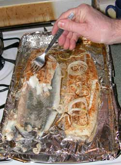 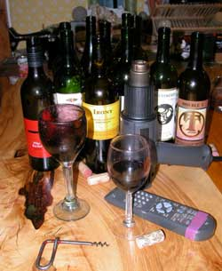
Whatayamean what's the heat gun in there for?
Sears A4060 Industrial Heat Gun. Just remember that if you ever want a heat gun for art projects. Try the setting just above 3 for proper vaporization.
Public Radio news journalists being present, we discussed the #1 news story in the US, in the last 100 year interval, not told by news journalists. That, of course, is the story no US news journalist will tell because it explains the controlling contradiction of the institution of US news journalists. Its effects are known among journalists in other nations who often laugh at how easily Americans are fooled with government lies presented as news by US journalists, that even the most basic questions reveal as government lies. International journalists and common people in other countries recognize the amusing American lies, but US journalists were institutionally trained, like US lawyers, to never question institutional contradictions (institutionally sanctioned lies upon which the institution's power and wealth are dependent). And therefore, when the legions of tax paid US government agency spokespersons (previous news journalists unlawfully hired by government) spew reams of COPY READY news releases, complete with government canned questions and answers designed to make government activities look good, they are copied and presented as impartial sounding news, without any independent questioning, for the bulk of the daily filler about government activities, at no expense to the news companies, and therefore higher profits, easily fooling gullible Americans, precisely what Adolph Hitler presented to the Germans to fool them into believing that the German war/police machine (protecting Germans from Jewish terrorists) was as rational as what George Bush's US news journalists present about the American war/police machine (protecting Americans from Islamic terrorists). If you are not laughing at the gullibility of Nazi era Germans and current Americans who believed rather than questioned the government-fed American news journalists, you are missing the show being enjoyed by commonly intelligent people in other nations. After the government's US news journalism empire inherently collapses because humans hold no ability to sustain contradictions, that generation will laugh and ridicule the previous US news journalists who so gullibly fooled themselves by never questioning their institution's controlling contradictions. The Pulitzer Prize for the related story will be given to a foreign journalist whose report will have been unsuccessfully censored in the categorically corrupted US news media empire.
That discussion occurred in the corner where we obscured news of the Trefethan and Irony wines until we therefore enjoyed the first and fullest glasses, a result of the institutional training of appreciators of fine wine who thoroughly question and therefore recognize the wisdom of their self-serving pursuits. It is with good fortune that the BarbecueNight.com production staff and actors guild do not read this website, or they would discover the ruse and always check the counter corner wine stash obscured behind the people involved in the most animated discussions.
Thereafter the discussion was elevated to the level of outrageous adventure planning, heavy on the planning. A few pranks were developed, which the world would enjoy. We will review the prank file when we run out of wine. It is the wine producers who are currently setting back the advancement of things you would enjoy, except for fine wine.
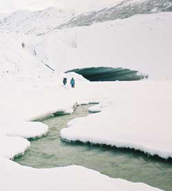
25 October: The evening's primary presentation was the previous weekend's caving trip, after the other one that was barely survived. They did not do much better, but they got pictures of how far they did not get because the lake was longer than their poorly inflated inner tube raft was useful. It was still not full of air because they still did not take a tire pump with them. They tried some of that foofy flat tire filling stuff in a can. The usual crowd of nay-sayers said it would not work, and now know for sure.
They got about as far as last time, but stayed afloat this time to see that the lake kept going a long ways. Nice beach for the boat launching back in the cave, perhaps camping and a party. Grand plans were therefore made for the next attempt to reach the end of the world, or at least the end of the lake in the glacier, and maybe into other labyrinths of caves.
The real photography crew has made it clear that no real camera will be present on the next expedition unless the expedition members complete a color graph recognition course and match their new knowledge in their apparel. Somebody explain to these guys what color is.
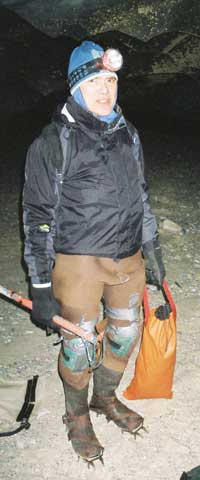
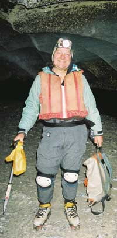
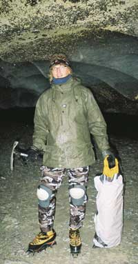
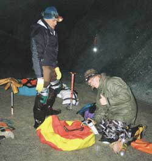
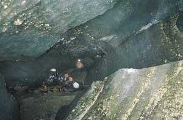
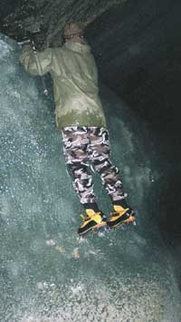
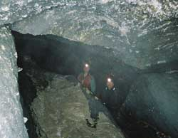
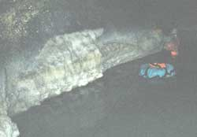
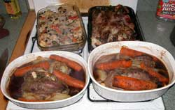 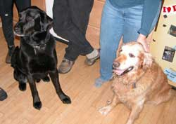
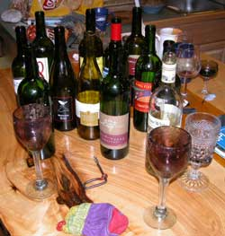 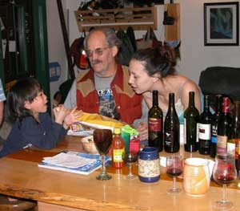
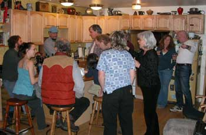
There have been certain individuals who understood the concepts, but they usually show up only once, on history assignments, between planets. Imagine getting stuck in the intellectual dark ages of planet earth, with no hope of educating the humans beyond their self-induced confusion, and not having enough money for sufficient new adventure equipment to get out of town in good adventure style. With the US dollar going to zero against the galaxy iridium unit, unless a visitor shows up with an extra telezipper (no chance), the Alaska Range ice caves are as far as a thinking person will get.
The adults just could not understand the reasoning being presented so one of the kids gave up on them early in the game.
The person enroute from Barrow to Los Vegas for the weekend, returning directly to Barrow, was assigned to make her first bet, 1 dollar, on a black square in Roulette. Expect a full report on the winnings.
High stress jobs in Houston and New York City, and their effect on the species, were discussed. Several contradicting conclusions were suggested to effect no resolution for the job holders or the species.
Oh, good quality book shelves are being sought for the library of the prestigious Alaskan Alpine Club world headquarters. Or good hardwood boards. Dumpster acquisitions qualify. No, the club has no money. They are mountain climbers.
If you are among the best and brightest, and by chance have a better bottle of wine, the winter adventures are currently being planned at the Every Thursday Night Barbecue at Dick Flaharty's.
Page 5 January 08 ----- February
08
Page 6 February 08 --- March 08
Page 7 March 08 ------ September 08
Page 8 September 08 - December 08
Page 9 December 08 --- May 10
Page 10 September 10 - Present
Page 1 November 06 - April 07
Page 2 May 07 -------- August 07
Page 3 August 07 ----- October 07
Links